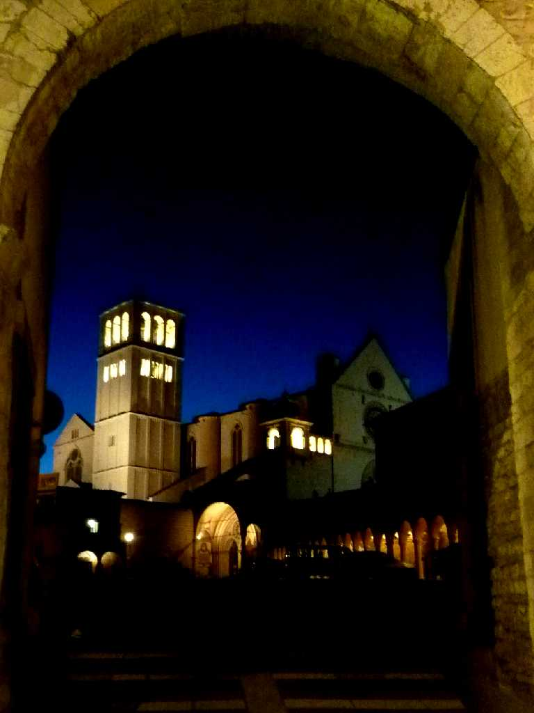
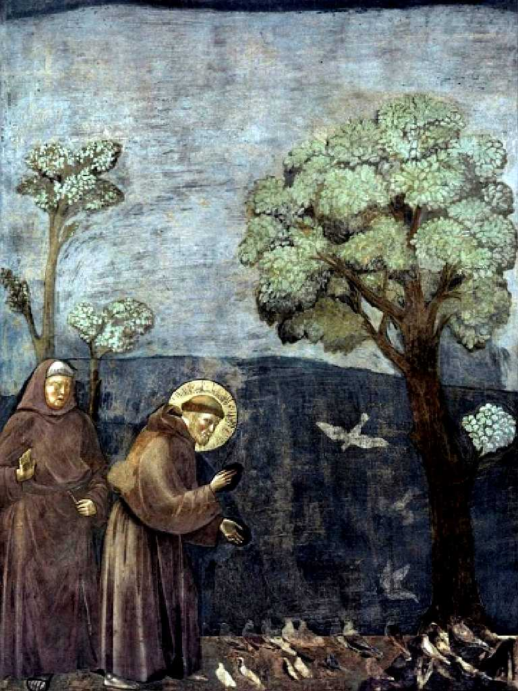
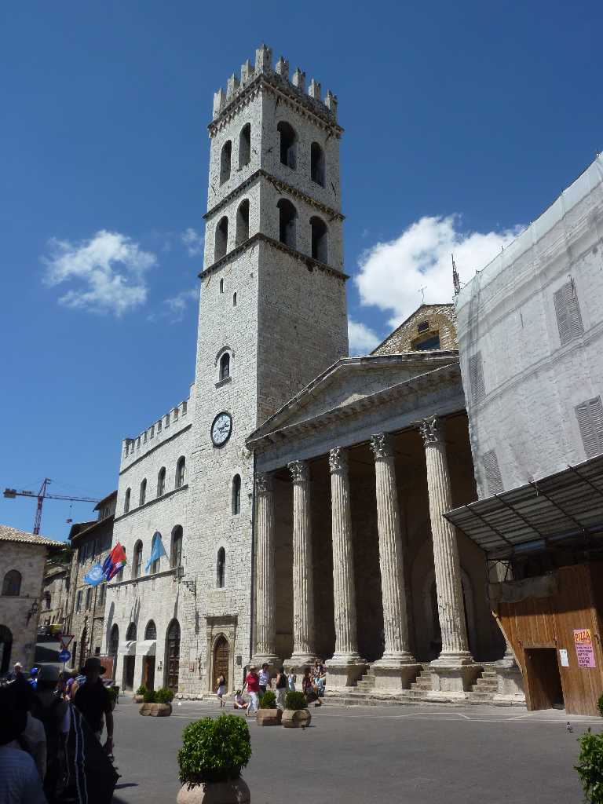
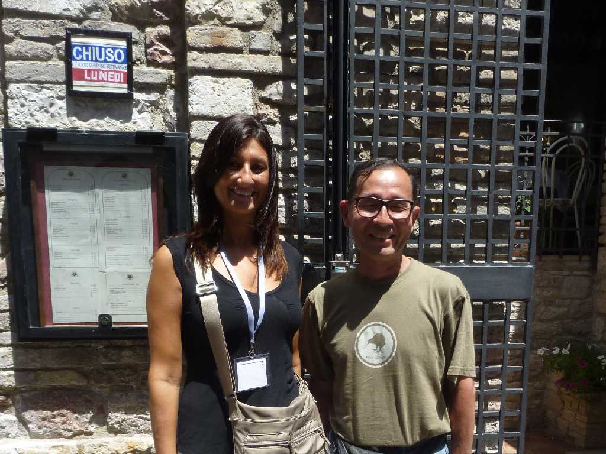
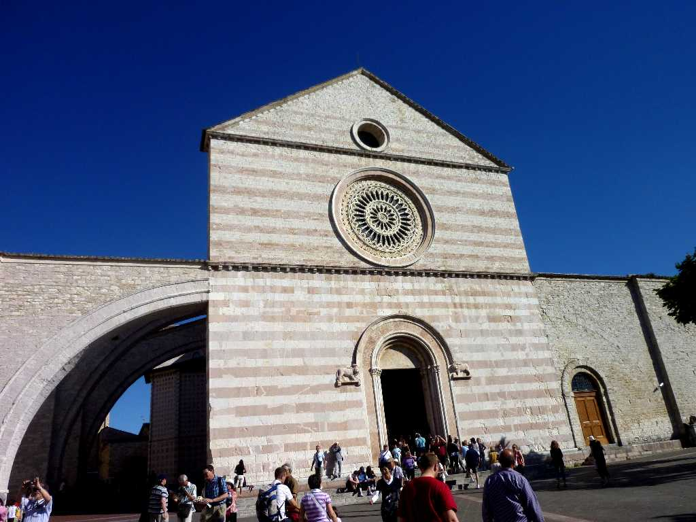

Basilica of San Francesco d'Assisi
フランチェスコ聖堂 聖フランチェスコ(1181-1226)はイタリアの聖人でフランシスコ修道会創立者 アッシジの裕福な家庭に生まれラテン語フランス語文学を学んだ後軍人となり２０代前半で捕虜となりスポレトの街で幻を見て回心しアッシジに戻り財産を売り払って教会に寄進し自らは清貧の生活に入った 晩年は盲目となったが鳥や動物たちと話すことができたという逸話等さまざまなエピソードがある世界中で慕われている聖人である アメリカの大都市サンフランシスコの語源

Francis Preaches to the Birds Fresco by Giotto Basilica of San Francesco
ジョット作 小鳥たちに説教する聖フランチェスコ


Piazza del Comune Assisi
アッシジ旧市街のコミューネ広場には古代ローマ帝国時代の紀元前一世紀に創られた美しい神殿が最高の保存状態で残っている １５３９年に内部を教会に改修しサンタ・マリア・ソプラ・ミネルヴァ教会となった ミネルヴァの上に建てられた聖マリア教会の意味でソプラ(上)は歌のソプラノ(最高音声部)の語源となった

June 25 2011 Assisi

Basilica di Santa Chiara d'Assisi
聖キアラ(1194-1253)はフランシスコ修道会の女子修道会創立者で聖フランチェスコに最初に帰依した者の一人